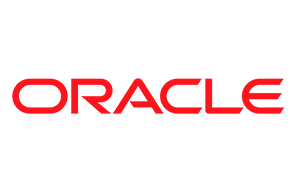
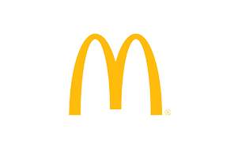
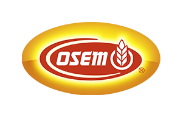
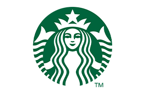
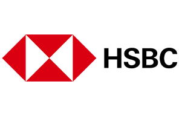
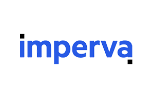
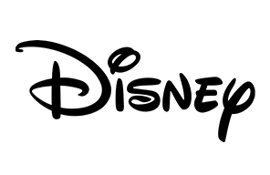
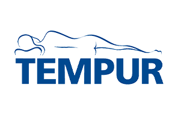

-

Cisco high
تدمج الشركة منصات في مجالات الشبكات والأمن والتعاون والتطبيقات والسحابة. ومن خلال الشركات التابعة المملوكة لها بالكامل في إسرائيل، تتمتع شركة سيسكو سيستمز بقاعدة عريضة من التواطؤ مع اقتصاد الاحتلال الإسرائيلي، وخاصة من خلال تقديم الخدمات للجيش الإسرائيلي. .
-
Dell high
تشمل منتجات ديل أجهزة الكمبيوتر الشخصية والخوادم. في عام 2023، فازت شركة ديل تكنولوجيز بمناقصة خوادم وزارة الدفاع الإسرائيلية، والتي تعتبر أكبر مناقصة خوادم في إسرائيل حتى الآن. يبلغ نطاق العقد 150 مليون دولار أمريكي لمدة عامين، حيث ستوفر ديل الخوادم والصيانة للجيش الإسرائيلي ووزارة الدفاع الإسرائيلية (IMOD). ومن المعروف أن مؤسسة مايكل وسوزان ديل، التي أنشأها مؤسسو ديل، تقدم الدعم المباشر لإسرائيل. .
-
General Electric medium
شركة متعددة الجنسيات مقرها الولايات المتحدة، تعمل في مجالات الطاقة والطاقة المتجددة والطيران والرعاية الصحية. تقدم الشركة توربينات الرياح وخدمات الصيانة لمشروعين كبيرين لطاقة الرياح في الجولان السوري المحتل، "إيميك هاباشا" و"روح بريشيت"، أكبر مشاريع الطاقة المتجددة في إسرائيل. .
-

Google (Alphabet) medium
أنشأت جوجل&مراكز بحث وتطوير في إسرائيل، تركز بشكل أساسي على خوارزميات البحث وتقنيات الإعلان والأمن. بالإضافة إلى ذلك، استحوذت على شركات ناشئة إسرائيلية، بما في ذلك Waze. بالتعاون مع أمازون، أطلقت جوجل مشروع Nimbus في عام 2021 لتوفير الخدمات السحابية للحكومة والجيش الإسرائيليين. وبينما يهدف هذا المشروع إلى تعزيز البنية التحتية التكنولوجية لإسرائيل، فقد واجه أيضًا انتقادات لمساعدته في المراقبة والتأثير على حقوق الفلسطينيين. .
AndroidChromeDeepMindYouTubeWaymo -
HP high
تمتلك شركة HP&مراكز للبحث والتطوير في كريات جات تساهم في تقنيات الطباعة والحوسبة. وكانت شركة HP هي المزود الوحيد لخوادم Itanium لنظام Aviv، وهو الإدارة الإسرائيلية للمعابر الحدودية والسكان والهجرة. .
FitstationHP Wolf SecurityHyperXOMENZ -

IBM medium
تتمتع الشركة&حضور قوي في مجال البحث والتطوير في إسرائيل يركز على تقنيات الحوسبة السحابية والذكاء الاصطناعي والأمن السيبراني واستحوذت على العديد من شركات التكنولوجيا الإسرائيلية. .
-

Intel very high
تمتلك شركة إنتل العديد من المرافق في إسرائيل&وقد طورت العديد من رقائقها في مراكز البحث والتطوير الإسرائيلية. يقع مصنع إنتل فاب 28 لإنتاج رقائق 7 نانومتر في كريات جات التي تأسست غرب أنقاض قرية عراق المنشية الفلسطينية. في 26 ديسمبر 2023، أعلنت إنتل عن أكبر استثمار لها حتى الآن - خطة بقيمة 25 مليار دولار لبناء مصنع رقائق جديد في إسرائيل.
-
Micron medium
أحد مصانع شركة ميكرون يقع في كريات جات، التي تأسست غرب أنقاض قرية فلسطينية قديمة. .
-

Microsoft medium
استحوذت على العديد من الشركات الناشئة الإسرائيلية ولديها حضور كبير&ي مجال البحث والتطوير في البلاد وتتخصص في الأمن السيبراني وتقنيات الذكاء الاصطناعي. تتمتع مايكروسوفت بتاريخ من المشاركة العميقة مع صناعة التكنولوجيا الفائقة الإسرائيلية وعلاقات وثيقة مع الجيش الإسرائيلي. في عام 2023، من المتوقع أن تفتتح مايكروسوفت أول منطقة لمركز البيانات السحابي في إسرائيل. .
-

NVIDIA medium
تتضمن عمليات NVIDIA في إسرائيل بشكل أساسي تقنيات الذكاء الاصطناعي والتعلم العميق. كما استحوذت NVIDIA على شركة Mellanox Technologies الإسرائيلية التي تتميز بمنتجات الشبكات. جمعت NVIDIA مؤخرًا 10 ملايين دولار للجمعيات الخيرية الإسرائيلية التي تساعد المدنيين المتضررين من الحرب، وتبرعت بأجهزة كمبيوتر للذين تم إجلاؤهم من شمال وجنوب إسرائيل، وقدمت وجبات ساخنة من مكتبها في يوكنعام. .
-

Oracle low
استحوذت على العديد من الشركات الإسرائيلية ولها تواجد في إسرائيل بشكل أساسي من خلال خدمات المبيعات والدعم. .
-

Qualcomm low
تدير شركة كوالكوم مرافق البحث والتطوير في إسرائيل والتي تركز على تقنيات الاتصالات اللاسلكية. .
-
Siemens high
وثّق فريق "من المستفيد" أنظمة التحكم في حركة المرور من إنتاج شركة سيمنز على الطريق رقم 5 والطريق رقم 443 في الضفة الغربية المحتلة، كجزء من نظام الطرق الإسرائيلي الذي يُحظر على الفلسطينيين السفر عليه. في مارس 2018، وقعت شركة سيمنز وشركة السكك الحديدية الإسرائيلية المملوكة للدولة عقدًا بقيمة 917 مليون دولار أمريكي لتسليم 60 مجموعة قطارات إقليمية من طراز Desiro HC، بإجمالي 330 عربة قطار كهربائية، على مدى عشر سنوات. .
-

Achva medium
شركة أغذية إسرائيلية متخصصة في الطحينة والحلاوة وغيرها من المنتجات المماثلة. يتم توزيع منتجاتها محليًا ودوليًا.
Israel (Global)
-
Carrefour high
في الثامن من مارس 2022، كشفت مجموعة كارفور عن اتفاقية امتياز في إسرائيل، بالشراكة مع شركة إليكترا للمنتجات الاستهلاكية والشركة التابعة لها ينوت بيتان. وتشارك هذه الكيانات في أنشطة داخل المستوطنات الإسرائيلية المثيرة للجدل. وهذا يجعل كارفور متواطئًا في جرائم الحرب التي ارتكبها نظام الاحتلال والاستعمار الاستيطاني والفصل العنصري الإسرائيلي.
PromocashFrance
www.bdsmovement.net -

The Central Bottling Company (Coca Cola) low
شركة المشروبات المركزية، المعروفة باسم كوكاكولا إسرائيل، هي شركة إسرائيلية خاصة لتصنيع وتوزيع المشروبات الغازية ومنتجات الألبان والمشروبات الكحولية. الشركة هي صاحبة الامتياز الحصري لشركة كوكاكولا في إسرائيل..
Coca ColaSpriteFantaPoweradeMinute MaidDasaniFUZE teaIsrael (Local)
Local soft drinks
www.whoprofit.org -
Elite medium
تعتبر شركة Elite جزءًا من مجموعة شتراوس، ولها حضور كبير في سوق الحلويات والشوكولاتة والقهوة في إسرائيل..
Israel (Local)
-

McDonalds low
تمتلك ماكدونالدز العديد من المطاعم في إسرائيل، ويتبرع أحد أكبر مستثمريها بمبالغ كبيرة لقضايا مختلفة في إسرائيل. كما قدمت ماكدونالدز وجبات مجانية للقوات الإسرائيلية وسط الحرب مع حماس. كما تبرعت ماكدونالدز من دول أخرى في الشرق الأوسط بأموال لدعم المدنيين في غزة.
United States
www.moneycontrol.com -
Nestlé high
تتمتع شركة نستله، وهي شركة سويسرية متعددة الجنسيات، بحضور في إسرائيل من خلال استثمارها في شركة أوسيم، وهي شركة إسرائيلية كبرى لإنتاج الأغذية. ويربط هذا الاستثمار نستله بمختلف الصناعات والأسواق المحلية، مما يوسع نطاق مشاركتها في المنطقة.
PerrierNescaféNespressoNIDOGerberCerelacKit KatCrunchSmartiesHäagen-DazsPurinaBoostStouffer'sLean CuisineMiloNesteaPowerBarswitzerland
-

Osem medium
تنتج شركة Osem، وهي شركة تابعة لشركة Nestlé، مجموعة واسعة من المنتجات الغذائية، ويقع مقرها الرئيسي في إسرائيل. ولديها العديد من المرافق الموجودة في جميع أنحاء إسرائيل، والتي تنتج السلع التي يتم استهلاكها محليًا ودوليًا. .
Israel (Local)
-

Pepsi medium
في عام 2018، استحوذت شركة بيبسيكو على شركة صودا ستريم مقابل 3.2 مليار دولار أمريكي، وهي شركة مقرها إسرائيل. وقد أثار هذا الاستحواذ ردود فعل نظرًا لموقع بعض عمليات صودا ستريم في الأراضي المتنازع عليها. كما أن بيبسيكو لديها مشروع مشترك مع شركة سابرا.
PepsiMountain Dew7 UpMirindaGatoradeTropicanaLipton Iced TeasRockstar EnergyUnited States
Local soft drinks
www.bloomberg.com -

Prigat medium
تنتج العصائر ومنتجاتها، وهي مملوكة لشركة جان شموئيل فودز. ولديها عمليات مقرها في إسرائيل وتصدر إلى بلدان مختلفة. .
Israel (Global)
-
Sabra high
شركة صبرا، المعروفة بإنتاج الحمص وغيره من المنتجات الغذائية، مملوكة جزئياً لمجموعة شتراوس، وهي شركة إسرائيلية. ويزعم المنتقدون أن دعم صبرا يساهم بشكل غير مباشر في استمرار الصراع بسبب الدعم المزعوم الذي تقدمه مجموعة شتراوس لقوات الدفاع الإسرائيلية..
Israel (Global)
-

SodaStream high
شركة تصنيع إسرائيلية تشتهر بجهازها لتصنيع المياه الغازية. وقد استحوذت عليها شركة بيبسيكو، لكن العمليات الأساسية لا تزال قائمة في إسرائيل في الأراضي المتنازع عليها..
Israel (Global)
-

Starbucks medium
هوارد شولتز هو أكبر مالك خاص لأسهم ستاربكس وهو صهيوني متشدد يستثمر بكثافة في اقتصاد إسرائيل بما في ذلك استثمار بقيمة 1.7 مليار دولار في شركة Wiz الناشئة للأمن السيبراني.
United States
www.fortune.com -

Strauss Group high
شركة أغذية إسرائيلية متعددة الجنسيات، مهمة في منتجات الألبان والوجبات الخفيفة، ولديها مجموعة متنوعة من الشراكات والتعاون في جميع أنحاء إسرائيل والعالم..
Israel (Global)
-
Tara medium
شركة ألبان أصغر حجمًا مقارنة بشركة تنوفا، لكنها لا تزال تتمتع بحضور كبير في السوق الإسرائيلية. اشترتها شركة كوكا كولا في عام 1997. .
Israel (Local)
-
Tempo Beverages medium
تنتج مجموعة متنوعة من المشروبات الكحولية وغير الكحولية، ولها حضور كبير في سوق المشروبات الإسرائيلية..
Israel (Local)
-
Tnuva high
تعد شركة تنوفا أكبر شركة لتصنيع المواد الغذائية في إسرائيل؛ حيث تمثل مبيعاتها 70% من سوق الألبان في البلاد بالإضافة إلى مبيعات اللحوم والبيض والأغذية المعبأة..
Israel (Global)
-

Puma very high
تعتبر شركة بوما متواطئة في دعم الصراع الإسرائيلي الفلسطيني بسبب رعايتها لاتحاد كرة القدم الإسرائيلي. ويشير المنتقدون إلى أن اتحاد كرة القدم الإسرائيلي يضم فرقًا من المستوطنات الإسرائيلية الواقعة في الأراضي المحتلة، وهو وضع يعتبر غير قانوني بموجب القانون الدولي. وأعلنت شركة بوما أنها لن تجدد رعايتها. وينتهي عقد بوما مع اتحاد كرة القدم الإسرائيلي في ديسمبر 2024. .
-

ZARA high
في عام 2022، استضاف جوي شويبل، صاحب امتياز زارا في إسرائيل، حدثًا للسياسي اليميني المتطرف إيتامار بن جفير، مما أثار غضبًا عامًا ودعوات للمقاطعة، بما في ذلك من شخصيات بارزة مثل وزيرة النقل الإسرائيلية ميراف ميخائيلي. تشمل الشركات الأخرى التابعة لشركات إنديتكس أيضًا:
Pull&BearBershekaStradivarious -
Amazon medium
شركة تكنولوجية عملاقة متعددة الجنسيات تركز على التجارة الإلكترونية والحوسبة السحابية وقطاعات أخرى مختلفة. أنشأت أمازون مراكز بيانات ومكاتب في إسرائيل. مشروع نيمبوس هو تعاون بين جوجل وأمازون لتوفير خدمات سحابية للحكومة والجيش الإسرائيليين، تم إطلاقه في عام 2021. وبينما كان يهدف إلى تعزيز البنية التحتية التكنولوجية لإسرائيل، واجه المشروع انتقادات بسبب مساعدته المحتملة للمراقبة والتأثير على حقوق الفلسطينيين، مما أثار مخاوف أخلاقية. .
-

Airbnb very high
شركة أمريكية عامة تعمل في مجال تأجير أماكن الإقامة عبر الإنترنت. وتقدم الشركة قوائم في أكثر من 220 دولة ومنطقة حول العالم. وتقدم Airbnb قوائم أماكن الإقامة في المستوطنات غير القانونية على الأراضي الفلسطينية والسورية المحتلة. .
-
Booking Holdings (Booking.com) very high
من خلال موقعها الإلكتروني، تقوم Booking.com بالترويج للعقارات الواقعة على الأراضي الفلسطينية والسورية المحتلة. يتم إدراج العقارات في المستوطنات الإسرائيلية في الضفة الغربية المحتلة على أنها تقع إما في إسرائيل أو في "الأراضي الفلسطينية - المستوطنات الإسرائيلية"، بينما يتم إدراج العقارات الواقعة في القدس الشرقية المحتلة والجولان السوري حصريًا على أنها تقع في إسرائيل، مما يؤدي إلى تضليل المستهلكين الذين يحجزون إيجارات قصيرة الأجل أو طويلة الأجل. .
-

eBay low
إيباي، وهي شركة التجارة الإلكترونية الأمريكية المتعددة الجنسيات، لها تواجد في إسرائيل بشكل أساسي من خلال الاستحواذ على الشركات المحلية وإنشاء مراكز التطوير. .
-
Expedia Group high
Expedia Group Inc. هي شركة سفر عبر الإنترنت. تقدم المجموعة حجز غرف الفنادق ومقاعد الطائرات وتأجير السيارات وخدمات الوجهات من خلال موردي السفر. من خلال مواقع الحجز والبحث عن السفر، Expedia.com وHotels.com والشركة التابعة لها trivago، تروج الشركة للعقارات الواقعة على الأراضي الفلسطينية والسورية المحتلة. .
Expedia.comHotels.comTrivagoVrboTravelocityHotwireOrbitzebookersCheapTicketsExpedia CruisesWotifCarRentalsEgencia -

Fiverr high
هو سوق إلكتروني لخدمات العمل الحر، تأسس في إسرائيل ونما منذ ذلك الحين على مستوى العالم. يربط هذا السوق الشركات بالعاملين المستقلين الذين يقدمون خدمات رقمية في فئات مختلفة. .
-
Monday.com high
Monday.com، وهي شركة تقنية مقرها تل أبيب، متخصصة في برامج إدارة العمل القابلة للتخصيص. وباعتبارها واحدة من أكثر الشركات الناشئة قيمة في إسرائيل، تشتهر بمنصة Work OS، التي تلبي احتياجات قاعدة عملاء عالمية في مختلف الصناعات. .
-
Tabnine high
Tabnine هي أداة لاستكمال التعليمات البرمجية تعمل بالذكاء الاصطناعي، تم تطويرها في إسرائيل، وتعمل على تحسين كفاءة الترميز عبر لغات البرمجة المختلفة. وهي مصممة لتبسيط عملية تطوير البرامج من خلال التكامل مع محرري التعليمات البرمجية المتعددين. .
-

TripAdvisor high
من خلال مواقعها الإلكترونية لحجز السفر، تعلن شركة TripAdvisor عن الفنادق والمنتجعات والمطاعم وبيوت الضيافة في الضفة الغربية المحتلة والقدس الشرقية المحتلة والجولان السوري المحتل. .
Bokun.ioCruisecriticFlipkeyTheforkHellorecoHolidaylettingsHousetripJetsetterNiumbaSeatguruSingleplatformVacationhomerentalsViator -

Wix.com very high
Wix هي منصة تتيح للمستخدمين إنشاء مواقع ويب من خلال استخدام أدوات السحب والإفلات عبر الإنترنت. ولديها قاعدة مستخدمين كبيرة في جميع أنحاء العالم. وتظهر رسائل داخلية مسربة أن Wix شجعت موظفيها على إنشاء محتوى يدعم "رواية إسرائيل" في صراع البلاد مع مسلحي حماس في غزة. .
Wixanswers.com -

AXA very high
شركة تأمين متعددة الجنسيات، بسبب استثماراتها في بعض الشركات والبنوك الإسرائيلية التي يُزعم أنها متورطة في أنشطة تتعلق بالصراع الإسرائيلي الفلسطيني. يعتقد مؤيدو المقاطعة أن استثمارات شركة أكسا تساهم بشكل غير مباشر في انتهاكات القانون الدولي وانتهاكات حقوق الإنسان ضد الفلسطينيين.
-

Bankinvest low
ترتبط شركة بانك إنفست مالياً بالاحتلال الإسرائيلي للأراضي الفلسطينية. فهي تقدم القروض والضمانات للشركات التي تمارس أنشطة على الأراضي المحتلة أو تستثمر الأموال فيها. .
-

BNP Paribas high
واتهم بنك بي إن بي باريبا بالحفاظ على علاقات تجارية واستثمارات مع شركات متورطة في بناء المستوطنات الإسرائيلية واستدامتها. ويزعم المنتقدون أن مثل هذه العلاقات تجعل البنك متواطئا في القضايا القانونية وحقوق الإنسان المرتبطة بالاحتلال. .
-
Citibank (Citigroup) medium
وقد زعم البعض أن سيتي بنك تربطه علاقات مالية بشركات متورطة في عمليات عسكرية وأمنية في الأراضي المحتلة. ويزعم الناشطون أن هذه العلاقات تدعم بشكل غير مباشر الأعمال المرتبطة بالاحتلال الإسرائيلي.
-

Danske Bank high
منذ عام 2018، قدم بنك دانسكه قروضًا وضمانات بقيمة 16 مليار كرونة دانمركية تقريبًا للشركات المرتبطة بالمستوطنات. ويشمل القرض شركة هايدلبرغ سيمنت الألمانية. تعرضت هايدلبرغ سيمنت لانتقادات لسنوات بسبب استخراج الموارد الطبيعية من الأراضي الفلسطينية المحتلة في انتهاك للقانون الدولي وتوريد الأسمنت لتوسيع المستوطنات الإسرائيلية غير القانونية المحيطة. .
-

HSBC high
وزعم ناشطون أن بنك HSBC لديه استثمارات في شركات تورد المعدات والخدمات العسكرية لإسرائيل، وهو ما يزعمون أنه يساهم في إدامة الاحتلال الإسرائيلي وانتهاكات حقوق الإنسان المزعومة ضد الفلسطينيين. .
-
JPMorgan Chase high
وتواجه جي بي مورجان اتهامات بإقامة علاقات مالية وتجارية كبيرة مع شركات ومؤسسات إسرائيلية مختلفة. ويزعم المنتقدون أن بعض هذه الكيانات متورطة بشكل مباشر أو غير مباشر في الاحتلال واستمرار الأنشطة الاستيطانية في الضفة الغربية. .
-

Nykredit medium
ترتبط شركة نيكريديت مالياً بالاحتلال الإسرائيلي للأراضي الفلسطينية. فهي تقدم القروض والضمانات للشركات التي تمارس أنشطة على الأراضي المحتلة أو تستثمر الأموال فيها. .
-
Actavis Generics medium
كانت شركة Actavis Generics، التي استحوذت عليها شركة Teva Pharmaceutical Industries في عام 2016، رائدة عالمية في مجال الأدوية الجنيسة، وتتخصص في تطوير وتصنيع الأدوية بأسعار معقولة. وقد عزز هذا التكامل محفظة منتجات Teva الجنيسة وحضورها في السوق العالمية..
German
www.wikipedia.org -

Ratiopharm medium
تخصصت شركة Ratiopharm، وهي شركة رائدة في مجال الأدوية الجنيسة استحوذت عليها شركة Teva Pharmaceutical Industries في عام 2010، في إنتاج الأدوية الجنيسة بأسعار معقولة. وقد أدى هذا الاستحواذ إلى توسيع محفظة الأدوية الجنيسة لشركة Teva بشكل كبير وتعزيز مكانتها في سوق الأدوية العالمية
German
www.wikipedia.org -
Teva high
شركة تيفا للصناعات الدوائية المحدودة، والتي يشار إليها غالبًا باسم تيفا، هي شركة أدوية إسرائيلية متعددة الجنسيات يقع مقرها الرئيسي في بتاح تكفا، إسرائيل. أنشطة تيفا في إسرائيل كبيرة، نظرًا لأنها نشأت هناك وأنشأت مقرها العالمي في البلاد. تدير تيفا مرافق تصنيع في جميع أنحاء إسرائيل، والتي تنتج مجموعة متنوعة من الأدوية التي يتم توزيعها محليًا ودوليًا.
Allen & HanburysAssiaAuspex PharmaceuticalsCephalonGecko Health InnovationsGlaxoIkapharmIVAX CorporationLabrys BiologicsMargarine UnieMicroDoseNovopharmNuPathe afterPlantexRimsaSalomon, Levin, and Elstein LtdTaiyo Pharmaceutical IndustryZoriIsrael (Global)
www.whoprofits.org -
Check Point Software Technologies high
تعتبر شركة Check Point رائدة في مجال الأمن السيبراني، حيث تقدم حلولاً أمنية واسعة النطاق ولها بصمة عميقة في مشهد الأمن السيبراني العالمي، حيث نشأت ومقرها في إسرائيل.
Israel (Global)
-
CyberArk high
تتخصص شركة CyberArk في إدارة الوصول المتميز، وهو جانب بالغ الأهمية من جوانب الأمن السيبراني. يقع المقر الرئيسي لشركة CyberArk في إسرائيل، وتتمتع بنطاق دولي واسع من خلال مكاتبها المنتشرة في جميع أنحاء العالم.
Israel (Global)
-

Imperva low
تأسست شركة Imperva في إسرائيل في البداية، ولديها الآن مقر رئيسي في الولايات المتحدة. تقدم الشركة حلول الأمن السيبراني التي تركز على حماية مواقع الويب وتطبيقات البيانات في السحابة وفي الموقع.
United States
-

McAfee low
McAfee هي شركة عالمية للأمن السيبراني لها مصالح تجارية مختلفة في إسرائيل، وتقدم حلولاً شاملة للأمن على الإنترنت.
United States
-

Radware medium
Radware هي شركة متخصصة في الأمن السيبراني تقدم حلولاً لضمان توفر خدمة التطبيقات في مراكز البيانات المادية والافتراضية والسحابية والمحددة بالبرمجيات.
Israel (Global)
-
Varonis medium
تأسست شركة فارونيس في إسرائيل والولايات المتحدة. وتتخصص في أمن البيانات والتحليلات، مع التركيز على حماية البيانات الحساسة، واكتشاف التهديدات الداخلية، وضمان الامتثال.
Israel & United States
-
Crazy Labs medium
Crazy Labs هي شركة إسرائيلية بارزة لنشر الألعاب على الهواتف المحمولة، ومقرها في تل أبيب. تأسست الشركة في عام 2010، وهي متخصصة في الألعاب فائقة السهولة، وتعمل على تطوير وإطلاق عناوين سريعة تواكب الاتجاهات الحالية. تتعاون Crazy Labs مع مطورين محليين للحفاظ على مكانتها في سوق الألعاب العالمية.
Israel (Global)
-

Moon Active medium
Moon Active هي شركة إسرائيلية لتطوير الألعاب المحمولة، والمعروفة بلعبتها الشهيرة Coin Master. تأسست الشركة في تل أبيب عام 2011، وتتخصص في إنشاء ألعاب غير رسمية تسبب الإدمان وتجذب جمهورًا عريضًا. Moon Active هي لاعب بارز في المشهد التكنولوجي في إسرائيل، حيث تعمل باستمرار على تحديث ألعابها لإبقاء المستخدمين منشغلين..
Israel (Global)
-

Plarium medium
Plarium هي شركة تطوير ألعاب إسرائيلية مقرها في هرتسليا، تأسست عام 2009. تشتهر الشركة بألعابها الاستراتيجية متعددة اللاعبين عبر الإنترنت مثل Vikings: War of Clans وRaid: Shadow Legends. باعتبارها لاعباً رئيسياً في المشهد التكنولوجي في إسرائيل..
Israel (Global)
www.wikipedia.org -

Playtika Holdings Corp high
شركة Playtika Holding Corp.، التي أسسها روبرت أنتوكول وأوري شاحاك في عام 2010، هي شركة إسرائيلية تعمل على تطوير الألعاب والتطبيقات المحمولة. أوري شاحاك هو ابن أمنون ليبكين شاحاك، رئيس أركان سابق لقوات الدفاع الإسرائيلية ووزير إسرائيلي.
Israel (Global)
www.wikipedia.org -

AHAVA high
تنتج الشركة مستحضرات تجميلية باستخدام معادن البحر الميت. يقع موقع إنتاج الشركة ومركز الزوار والمتجر الرئيسي في مستوطنة متسبيه شاليم في غور الأردن المحتل. .
Israel (Global)
www.whoprofits.org -

Caterpillar very high
تصنع شركة كاتربيلر منتجات تشمل الآلات الثقيلة والأدوات الصناعية وأدوات البستنة، فضلاً عن الأحذية والملابس. وقد تم استخدام جرافات كاتربيلر من طراز D9 (والتي يطلق عليها في إسرائيل اسم تيدي بير) في تفكيك المنازل في الأراضي الفلسطينية. وقد تم تصميم هذا النموذج خصيصاً لتلبية مواصفات قوات الدفاع الإسرائيلية..
United States
www.wikipedia.com -

Disney low
في أعقاب الهجمات في إسرائيل، تبرعت شركة والت ديزني بمبلغ 2 مليون دولار للمنظمات التي تقدم الإغاثة الإنسانية لإسرائيل.
United States
www.thewaltdisneycompany.com -
G1 Secure Solutions (G4S) very high
وتعرف الشركة أيضًا باسم G4S، وقد قدمت خدمات أمنية، بما في ذلك معدات وأفراد أمن، للشركات في المستوطنات في الضفة الغربية المحتلة، بما في ذلك موديعين عيليت ومعاليه أدوميم ومستوطنة كاليا في وادي الأردن. كما قدمت الشركة خدمات إلى حي هار أدار الاستيطاني في القدس الشرقية المحتلة. بما في ذلك العديد من الحالات الأخرى..
Israel (Global)
www.whoprofits.org -

L'Oréal low
واجهت شركة لوريال التدقيق والدعوات إلى مقاطعتها في الماضي بسبب دعمها لإسرائيل، وخاصة أثناء الصراعات التي تشمل إسرائيل وفلسطين. وكثيراً ما دارت هذه التدقيقات حول التبرعات بالمنتجات للنساء العاملات في قوات الدفاع الإسرائيلية أو غيرها من الإجراءات التي يُنظر إليها على أنها داعمة لإسرائيل..
LancômeYves Saint LaurentGiorgio ArmaniKiehl’sUrban DecayBiothermMaybelline New YorkGarnierNYX Professional MakeupKérastaseRedkenLa Roche-PosayVichySkinCeuticalsCeraVeFrance
www.independent.co.uk -

Puregym low
كانت PureGym، وهي سلسلة صالات رياضية دولية، هدفًا للمقاطعة بدءًا من 9 مايو 2024. جاء ذلك بعد أن أعرب الرئيس التنفيذي همفري كوبولد عن دعمه لمبيعات الأسلحة البريطانية لإسرائيل خلال ظهوره في برنامج BBC Question Time. تواجه المملكة المتحدة ضغوطًا متزايدة لوقف هذه المبيعات وسط مزاعم بانتهاكات حقوق الإنسان من قبل إسرائيل في الصراع المستمر في غزة..
UK
www.dailymail.co.uk -

Tempur Sealy medium
الشركة هي شركة متخصصة في توفير مستلزمات الفراش. وهي تقوم بتطوير وتصنيع وتسويق المراتب والقواعد القابلة للتعديل والوسائد ومنتجات النوم والاسترخاء الأخرى. ومن خلال موزعها الإسرائيلي، تدير الشركة فرعًا في مجمع مدينة التصميم في مستوطنة ميشور أدوميم، بالضفة الغربية المحتلة..
TempurTempur-PedicCocoonSealyStearns & FosterUnited States
www.whoprofits.org -
Unilever medium
تملك شركة يونيليفر العديد من العلامات التجارية بما في ذلك بن آند جيري. وعندما قررت بن آند جيري التوقف عن بيع منتجاتها في إسرائيل، باعت يونيليفر حقوق التوزيع الإسرائيلية إلى آفي زينجر للالتفاف على قرارها وإجبار العلامة التجارية بن آند جيري على الاستمرار في البيع في إسرائيل..
AxeBen & Jerry'sCifComfortDoveHellmann'sKnorrLUXLove Beauty & PlanetMagnumOLLY VitaminsOMORexonaSmartyPants VitaminsSunsilkVaselineWall's (Frisko)United Kingdom
www.unilever.com -

Volkswagen Group low
تقدم شركة مان هيكل المركبات المدرعة لمكافحة الشغب التي تخدم شرطة إسرائيل، والتي تصنعها شركة بيت ألفا للتكنولوجيا التابعة لقسم البحث والتطوير التكنولوجي في شركة HOS. وقد استخدمت القوات الإسرائيلية المركبة Skunk على نطاق واسع ضد الفلسطينيين سواء في المظاهرات أو كإجراء عقابي في الضفة الغربية المحتلة والقدس الشرقية وداخل الخط الأخضر، كما استخدمت ضد المدارس والفرق الطبية..
VolkswagenAudiSEATSKODABentleyBugattiLamborghiniPorscheDucatiScaniaMANGermany
www.whoprofits.org -
Volvo Group medium
شركة عامة متعددة الجنسيات مقرها السويد، تصنع الشاحنات والحافلات ومعدات البناء وغيرها. توفر مجموعة فولفو المعدات الثقيلة المستخدمة في هدم المنازل الفلسطينية في الضفة الغربية المحتلة والقدس الشرقية، وبناء المستوطنات الإسرائيلية وبناء الجدار العازل..
Sweden
www.whoprofits.org
التكنولوجيا والكمبيوتر
تشكل التكنولوجيا ما يقرب من 20% من الناتج المحلي الإجمالي لإسرائيل
تساهم صناعة التكنولوجيا والكمبيوتر بشكل كبير في اقتصاد إسرائيل، حيث تمثل 18.1% من الناتج المحلي الإجمالي وحوالي 50% من صادراتها. وهذا يجعل من الضروري أن يكون المستهلكون على علم عند شراء منتجات مثل أجهزة الكمبيوتر والهواتف الذكية والأجهزة المنزلية وما إلى ذلك. .
طعام و مشروبات
ملابس
الخدمات والمنصات عبر الإنترنت
الخدمات المصرفية
الصيدلة والطب
الأمن الإلكتروني
الألعاب & و التطبيقات
اشياء اخراء
* *تم الحصول على هذه المعلومات بدقة من منظمات مرموقة وموثوقة مثل الأمم المتحدة، ومركز أبحاث من المستفيد، وحركة مقاطعة إسرائيل وسحب الاستثمارات منها وفرض العقوبات عليها. بالإضافة إلى ذلك، تم استخدام بيانات شاملة تم تجميعها وتحليلها بواسطة نموذج GPT-4 باستخدام بيانات حتى أبريل 2023 والعديد من المقالات الإخبارية لتعزيز أهمية المحتوى المقدم. .